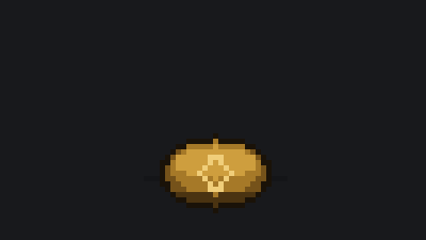

Canvas 80×45, escala inteira 6× com NEAREST. 17 frames, 1,83 s, 19 KB cada. O GIF vetorial anterior pesava 393 KB — 20× mais pesado e sem cara de pixel art.
coin_heads.gif — cai em HEADS

coin_tails.gif — cai em TAILS
A variante existe porque o GIF pode deixar de ser enfeite: o bot tem o forecast na mao antes de publicar o embed, entao pode publicar a moeda do lado que o prognostico favorece.
| frame | ms | papel |
|---|---|---|
| f0 | 90 | antecipacao: achata antes de subir |
| f1 | 60 | lancamento: estica na direcao do movimento |
| f2–f5 | 60–70 | topo da rotacao, verso a mostra |
| f6–f7 | 75–80 | achata ate o perfil: a linha |
| f8–f10 | 80–90 | sai do perfil, ainda verso |
| f11 | 95 | virada: a face aparece no ar |
| f12 | 110 | pouso |
| f13 | 90 | amortecao: o peso do impacto |
| f14 | 600 | SEGURA no resultado |
| f15 | 140 | volta ao repouso |
O timing e deliberadamente desigual: 60 ms no topo da rotacao contra 600 ms parado no resultado. É o que segura a leitura — com fps uniforme a moeda parece um gif genérico e o olho nao tem onde descansar.